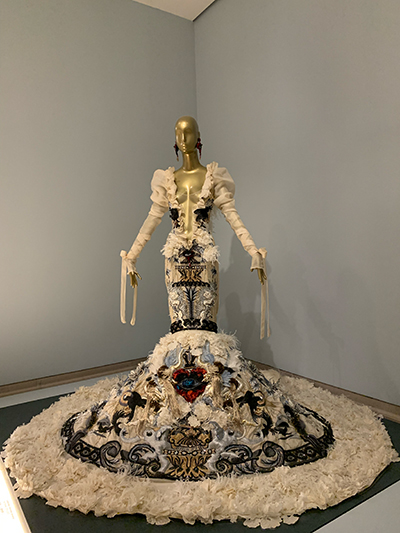
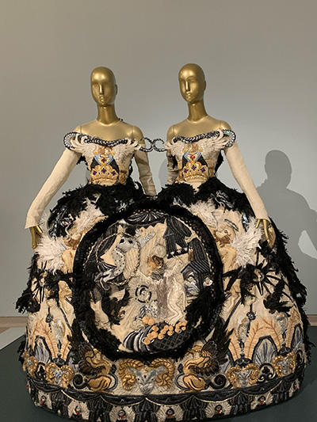
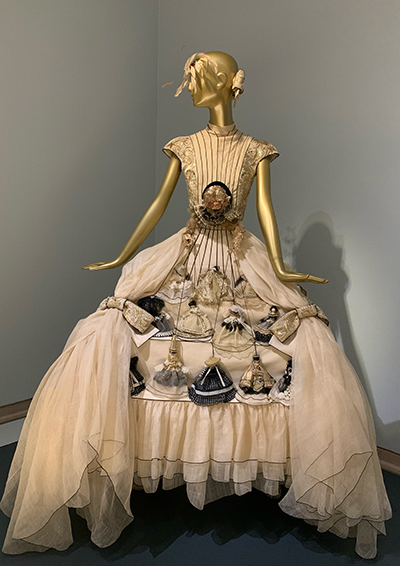
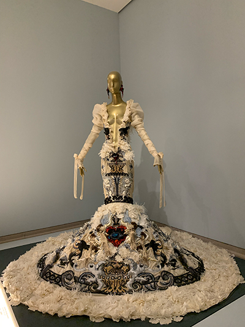
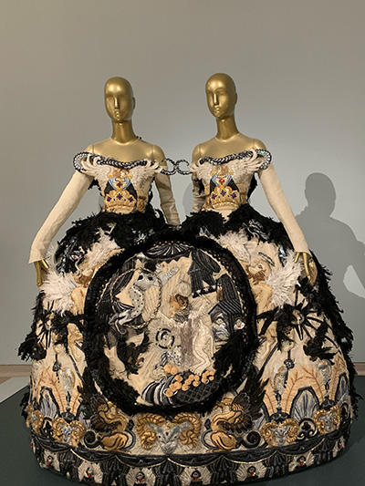
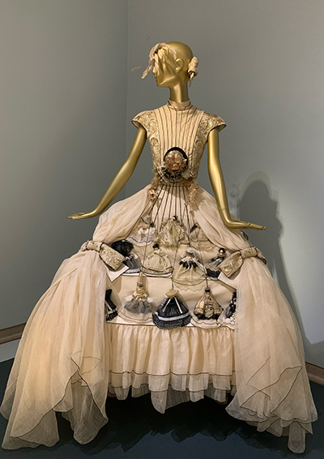
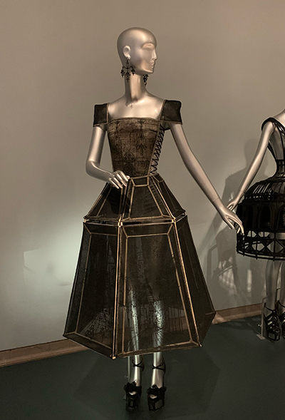
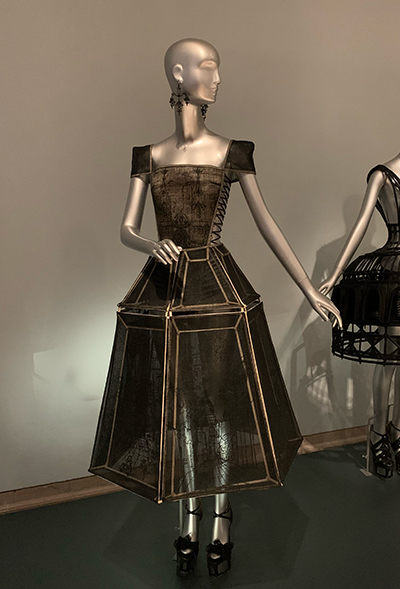

Legion of Honor
In August 2022, I visited the Guo Pei: Couture Fantasy exhibit at the Legion of Honor in San Francisco. It featured over 80 pieces from China's first couturier, Guo Pei. Through a blend of everything from Chinese imperial history to European architecture to Buddhist symbolism, Guo Pei's designs are extravagant pieces that blur the line between fashion, art, and sculpture.
As a Chinese Studies, International Relations, and Design triple major, this exhibit had a bit of everything I am interested in. I want to introduce a few pieces that stood out to me and explore their cultural relevance.


 





 
